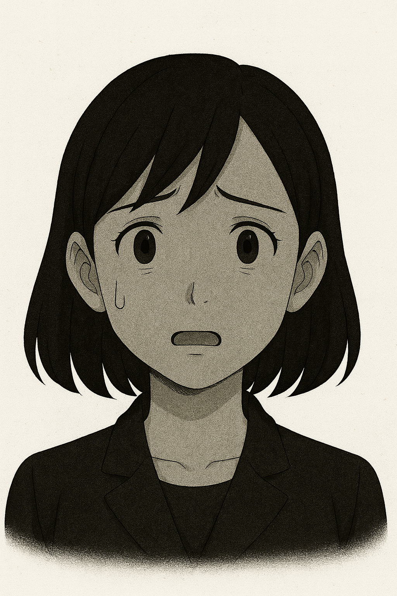

私ヒロイン
彼氏と同棲を始めた矢先に、⚪︎⚪︎ちゃんという人形が原因で破局した。それ以降、怪奇現象やブロックしている元彼から毎日届く人形の写真に悩み、先輩に相談する。
彼氏と同棲を始めた矢先に、⚪︎⚪︎ちゃんという人形が原因で破局した。それ以降、怪奇現象やブロックしている元彼から毎日届く人形の写真に悩み、先輩に相談する。
⚪︎⚪︎ちゃんという人形に一目惚れしてしまい、彼女と別れる。その後一気に老化が進み、中年男性のような風貌になった。実は"私"にまだ未練がある。
"私"の職場の先輩。幼少期から霊感が強く、よく周りから不思議な相談を受ける。人形をきっかけに"私"と親しくなる。岡田さん編での主人公。
片目が取れたボロボロの日本人形。元彼が正気に戻ってからは、本人ですら何と呼んでいたのか覚えていない。